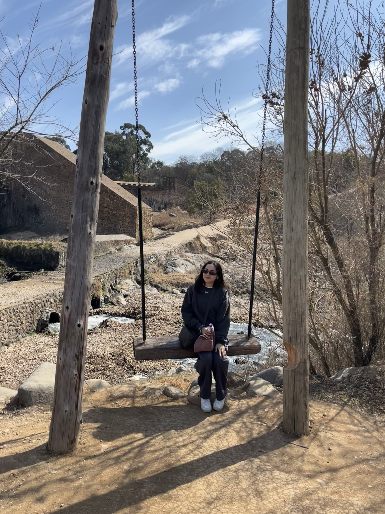

About
Status: updated
Hello! I’m an early career psychology researcher at the Queensland University of Technology, currently undertaking a Master of Philosophy. I specialise in neurocognitive research, with a focus on identifying early markers of schizophrenia risk in children and adolescents.
My research focuses on understanding the developmental trajectories of error processing abnormalities in children and adolescents who are at increased risk for schizophrenia.
My work uses longitudinal secondary data, allowing me to examine how neurocognitive processes change across development. Specifically, I work with event related potentials (ERPs) to investigate neural markers of error processing and cognitive control.
I am particularly interested in rigorous methodology, thoughtful statistical modelling, and careful interpretation of complex developmental data.
Through my research, I aim to contribute to a clearer understanding of early neurocognitive risk markers and support evidence-based approaches to early identification and prevention in mental health.